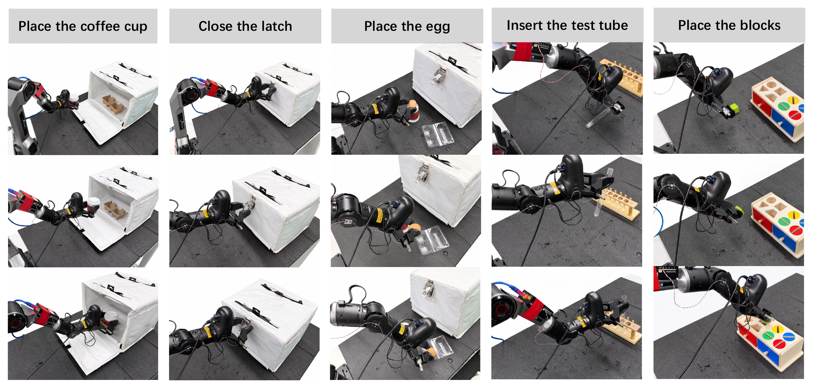
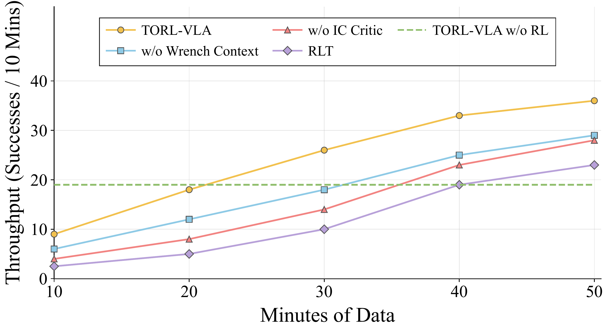
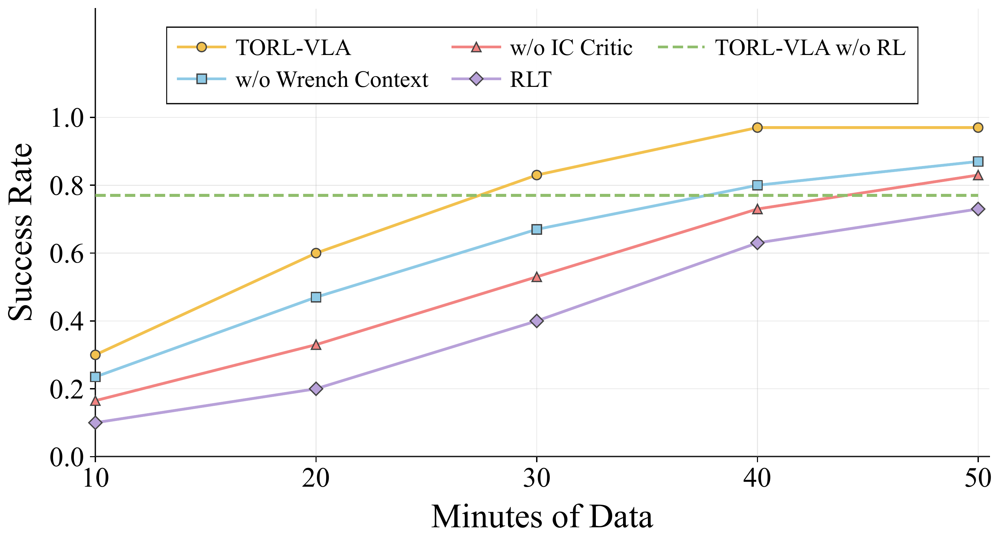
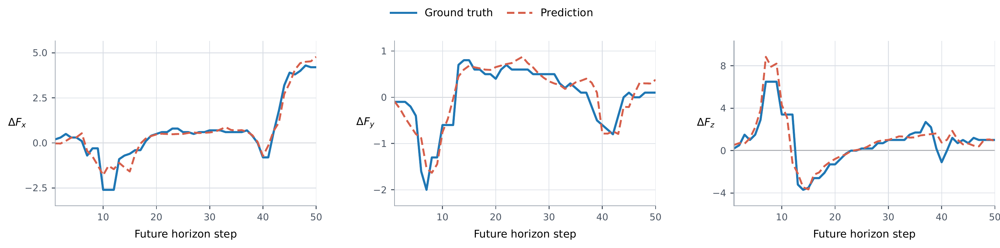
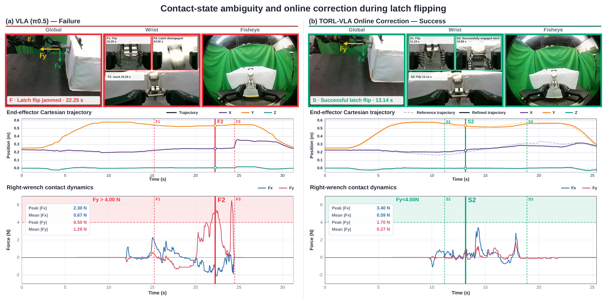

Tactile-Aware Reference Training
Fuse tactile-derived wrench information with vision, language, and robot state. Train the reference model offline to jointly predict action chunks and future wrench sequences.
A tactile-guided online reinforcement learning framework
1Meituan 2Beijing Institute of Technology 3Beihang University 4State Key Lab of Multimodal Artificial Intelligence Systems, Institute of Automation, CAS 5China University of Mining and Technology (Beijing)
Overview
Contact-rich manipulation depends on physical states often difficult to infer from images, such as slipping, jamming, and excessive contact force. Although tactile-aware VLAs improve contact awareness, their behavior remains limited by contact conditions covered in fixed offline data.
TORL-VLA addresses this limitation through tactile-guided online reinforcement learning. A tactile-derived wrench-aware VLA predicts reference actions and future wrench sequences, while a lightweight stage-specific actor-critic learns to refine them through real-world interaction. Training combines policy-generated and human-intervention data; an intervention-censored critic prevents post-intervention success from being wrongly credited to preceding policy actions.
Autonomous evaluation uses fixed model parameters with closed-loop tactile feedback.
Method
TORL-VLA trains a tactile-derived wrench-aware VLA offline to predict reference actions and future wrench sequences. With this reference frozen, stage-specific actor-critic modules learn action refinement through real-world online RL. Final autonomous evaluation uses fixed parameters and closed-loop tactile feedback.

Fuse tactile-derived wrench information with vision, language, and robot state. Train the reference model offline to jointly predict action chunks and future wrench sequences.
Keep the VLA frozen and train lightweight stage-specific actor-critic modules through real-world interaction. Measured wrench feedback and predicted wrench cues guide action refinement at contact-critical stages.
Fix all model parameters and evaluate autonomous execution on long-horizon and standalone tasks. Tactile feedback remains available for closed-loop action refinement.
01 · Reference Model
The reference model fuses tactile-derived wrench information with vision, language, and robot state to jointly predict reference actions and future wrench sequences.
The calibrated vendor SDK maps each 6 × 8 fingertip tactile array to a 6D force–torque wrench. The temporal representation uses 10 observations from the most recent 2 seconds, including the current measurement. Each observation is expressed relative to the current wrench before encoding.
The tactile token is appended after visual-language-model encoding and fused through attention and soft-routed mixture-of-experts (MoE). A learnable bypass coefficient is initialized to zero. Future wrench targets are changes relative to the current measurement, wt+k − wt.
02 · Online Refinement
With the VLA frozen, lightweight stage-specific actors learn to refine its reference actions using measured wrench feedback and predicted wrench cues.
The VLA remains frozen during online RL.
The frozen VLA predicts H = 50 action steps and future wrench changes. The first K = 10 steps form the references used before replanning.
Inputs for Action Refinement The refiner combines the references above with current and recent wrench measurements, visual-semantic features, and robot state.
A frozen stage estimator identifies the current task stage.
Use the frozen reference action chunk directly.
ArefThe stage-specific actor uses the reference signals and feedback to directly output a refined action chunk.
AφThe VLA predicts H = 50 action steps and future wrench changes. The first K = 10 steps define the action and wrench references used before replanning. Actor inputs include current measured wrench, recent measured wrench history, predicted wrench cues, reference actions, proprioception, and compact visual-semantic features.
The stage estimator is trained offline and remains frozen during online RL. A route change requires confidence above 0.9 for two consecutive chunks. Contact-critical stages include cup insertion, latch locking, egg grasping and placement, and the two standalone tasks.
Training Mechanism
Two critics separate task-return learning from intervention-aware action evaluation. A reference-relative hinge guides policy improvement.
Learns task returns from both policy and human-intervention data.
Stops post-intervention success from being wrongly credited to preceding policy actions by truncating continuation at takeover boundaries.
Adds a training penalty when a refined action has a lower IC-critic score than the VLA reference action in the same state.
The task critic retains standard bootstrapping. At a detected takeover boundary, the IC target applies the intervention cost and sets its continuation term to zero.
Compare the refined and reference actions in the same state.
Penalty activeThe refined action has a lower IC-critic score than the reference action.
No hinge penaltyThe refined action scores at least as well as the reference. A low absolute score alone does not activate the hinge.
Experiments
The latch-box task combines coffee-cup placement, latch locking, and egg handling in one sequence. Block Placement and Test-Tube Insertion are evaluated independently.
Experiments use a Piper arm with a Pika gripper, three camera views, and two Tacta fingertip sensors.

Each subtask, full task, and standalone task is tested over 30 autonomous trials with all model parameters fixed. Full-task success requires completing the three latch-box subtasks in sequence without human intervention, reset, safety stop, object drop, or damage.
Trial outcomes are judged after execution using the physical criteria below. These judgments are used for reporting only.
| Task | Success condition | Failure condition |
|---|---|---|
| Coffee Cup | Pick cup; insert into holder; release; cup remains upright and stable. | Holder miss; rim hang-up; partial insertion; large tilt; drop; unsafe contact. |
| Latch | Grip latch; flip toward locking direction; press into locked state; latch remains secured after release. | Missed latch; slip during flipping; missed locking edge; incomplete lock; rebound; unsafe force. |
| Egg | Grasp egg; transfer to holder; release; egg remains stable without visible damage. | Slip; drop; holder collision; rolling out after release; excessive grasping force; visible damage. |
| Full Task | Complete Coffee Cup, Latch, and Egg sequentially in one autonomous rollout. | Any subtask failure; human intervention; reset; safety stop; object drop; object damage. |
TORL-VLA improves full-task success and completion time over the offline and online refinement baselines.
| Method | Coffee Cup | Latch | Egg | Full-task success | Full-task average time |
|---|---|---|---|---|---|
| π0.5 | 18/30 | 15/30 | 20/30 | 12/30 | 199.65 s |
| TA-VLA | 19/30 | 17/30 | 20/30 | 12/30 | 204.45 s |
| ForceVLA | 21/30 | 20/30 | 22/30 | 15/30 | 195.34 s |
| TORL-VLA w/o RL | 25/30 | 23/30 | 25/30 | 21/30 | 191.91 s |
| RLT | 26/30 | 25/30 | 25/30 | 23/30 | 175.23 s |
| TORL-VLA | 30/30 | 29/30 | 30/30 | 28/30 | 165.45 s |
Full-task average time is computed over successful full-task trials. TORL-VLA w/o RL directly executes the learned reference; RLT uses the same frozen reference-guided refinement setting but omits wrench input and the intervention-censored critic.
Successful autonomous rollouts out of 30 trials.
Lower is better; computed over successful full-task trials.
RLT’s Egg failures mainly arise from overly aggressive grasps, whereas TORL-VLA w/o RL fails primarily from imprecise grasp positioning.
Independent Evaluation
Block Placement and Test-Tube Insertion test contact-guided alignment beyond the latch-box task. Each method is evaluated over 30 autonomous trials per task.
π0.5: 18/30 · TORL-VLA w/o RL: 24/30
π0.5: 17/30 · TORL-VLA w/o RL: 23/30
| Method | Block Placement | Test-Tube Insertion |
|---|---|---|
| π0.5 | 18/30 | 17/30 |
| TA-VLA | 20/30 | 21/30 |
| ForceVLA | 19/30 | 20/30 |
| TORL-VLA w/o RL | 24/30 | 23/30 |
| RLT | 24/30 | 24/30 |
| TORL-VLA | 30/30 | 29/30 |
These standalone trials are excluded from latch-box full-task success and full-task average time. Representative videos appear in Standalone Task Demonstrations.
We remove individual reference-model components, then test online RL without wrench feedback or without the IC critic to measure their contributions to task success.
| Reference Model | Cup | Latch | Egg |
|---|---|---|---|
| Without wrench history token | 24/30 | 22/30 | 22/30 |
| Without future wrench prediction | 25/30 | 21/30 | 24/30 |
| Without MoE fusion | 18/30 | 17/30 | 19/30 |
| Without physical bypass | 23/30 | 20/30 | 21/30 |
| Full reference, without RL | 25/30 | 23/30 | 25/30 |
| Online RL | Cup | Latch | Egg | Full Task |
|---|---|---|---|---|
| Without wrench context | 27/30 | 27/30 | 26/30 | 26/30 |
| Without IC critic | 27/30 | 26/30 | 28/30 | 24/30 |
| Full TORL-VLA | 30/30 | 29/30 | 30/30 | 28/30 |
Removing MoE causes the largest drop in the reference-model ablation. Removing wrench context lowers full-task success from 28/30 to 26/30; removing the IC critic lowers it to 24/30.
The IC critic supports faster improvement early in Latch training. Policies are compared at the same accumulated interaction times using a shared frozen reference and matched interaction budgets.


Intervention Learning
On Latch-Lock, we compare learning from human interventions and test how incorrect intervention-boundary labels affect final task success.
| Method | Clean Training | False Boundary | Success Drop |
|---|---|---|---|
| RLIF-style | 25/30 | 18/30 | 7/30 |
| TORL-VLA | 29/30 | 27/30 | 2/30 |
One false takeover boundary is added per training episode. Final evaluation uses fixed parameters over 30 autonomous trials, without injected boundaries.
TORL-VLA retains 28 successes out of 30 when the scalar intervention cost is set to zero.
One originally non-boundary chunk per online-training episode is randomly relabeled as a boundary before replay updates. Logged control-source labels, actions, rewards, and other transition fields remain unchanged. Both methods use matched interaction budgets; final evaluation is frozen and perturbation-free.
The best tested RLIF-style intervention cost is cint = 0.5. TORL-VLA is evaluated across cint ∈ {0, 0.5, 1.0, 2.0} and ρint ∈ {0.3, 0.5, 0.7}. The chunk-level boundary rule uses ρint = 0.5.
| Method | Intervention Costs cint | Latch-Lock Successes / 30 |
|---|---|---|
| RLIF-style | 0.1 / 0.5 / 1.0 / 2.0 | 23 / 25 / 21 / 19 |
| TORL-VLA | 0 / 0.5 / 1.0 / 2.0 | 28 / 28 / 29 / 27 |
| Boundary Threshold ρint | 0.3 | 0.5 | 0.7 |
|---|---|---|---|
| TORL-VLA Latch-Lock | 28/30 | 29/30 | 29/30 |
The threshold is applied to the human-controlled fraction of adjacent action chunks during training. Control-source labels are used for learning and are not actor inputs.
Contact Prediction
Predicted changes in left-fingertip force follow the main trends and transients of the measured force over the next 50 steps.

Contact Generalization
All policies are trained under nominal contact conditions. We then change latch-hinge friction and use a softer cup, with model parameters fixed during testing and nearly unchanged visual appearance.
Low, nominal, and high hinge friction.
| Method | Low | Nominal | High |
|---|---|---|---|
| π0.5 | 10/30 | 15/30 | 8/30 |
| TORL-VLA w/o RL | 18/30 | 23/30 | 15/30 |
| TORL-VLA | 27/30 | 29/30 | 26/30 |
Normal and softened cup material.
| Method | Normal | Softened |
|---|---|---|
| π0.5 | 18/30 | 10/30 |
| TORL-VLA w/o RL | 25/30 | 18/30 |
| TORL-VLA | 30/30 | 27/30 |
Entries are successes out of 30. TORL-VLA degrades substantially less than π0.5 and TORL-VLA w/o RL across both unseen physical-property shifts.
Tactile-Guided Correction
We compare a representative latch-flipping failure with a successful TORL-VLA rollout. Around the critical contact state, camera observations look similar, while fingertip wrench measurements reveal mechanical jamming.

Peak / mean |Fy| in the illustrated failed rollout.
Peak / mean |Fy| in the illustrated successful rollout.
These force statistics describe the two representative rollouts. Aggregate task performance is reported separately in the 30-trial evaluations.
Demonstrations
Seven tasks illustrate contact-rich execution: five compare the base VLA with the wrench-aware reference, and two additionally evaluate stage-specific online RL refinement.
These five tasks compare the base VLA with the wrench-aware reference model, without online RL refinement. They examine contact-aware execution using tactile-derived wrench information and future-wrench prediction.
Reorienting the bottle requires contact-aware direction control after the gripper establishes contact with the object.
Base policy succeeds on many trials but remains sensitive to final contact direction.
Wrench-aware action references improve reorientation consistency.
Nested-cup friction requires extracting only the top cup without slipping or lifting multiple cups together.
The base policy applies excessive grasping force, preventing the nested cups from being separated.
Wrench-aware reference signals help regulate the contact force appropriately, allowing the nested cups to separate.
Ping-pong ball grasping tests force-sensitive handling of a spherical object that can deform under excessive grip force.
Base policy already reaches high success but must avoid over-compressing the ball.
Wrench-aware references preserve high success on this force-sensitive grasp.
Open jelly cups require gentle contact: excessive force can squeeze the jelly out, while insufficient force can cause slip.
Base policy is sensitive to slip and excessive squeezing during grasping.
Wrench-aware references improve gentle handling of the open jelly cup.
Whiteboard erasing evaluates sustained contact while the end effector moves along the surface.
The base policy already solves this visually observable wiping task reliably.
Wrench-aware reference signals preserve the same reliable wiping performance.
Block Placement and Test-Tube Insertion require fine alignment after initial contact. We compare the base VLA, TORL-VLA w/o RL, and TORL-VLA to show how online refinement adjusts contact during placement and insertion.
Block placement requires fine contact-guided alignment before the object can be released stably.
Counts match the main standalone evaluation. Videos illustrate representative executions.
Base policy can leave final alignment errors.
Wrench-aware reference uses tactile-derived wrench cues for contact-aware placement.
Online refinement corrects contact alignment before release.
Test-tube insertion requires aligning orientation and position with a narrow holder after initial contact.
Counts match the main standalone evaluation. Videos illustrate representative executions.
Base policy can leave angular or translational placement errors.
Wrench-aware reference uses tactile-derived wrench cues for contact-aware placement.
Online refinement adjusts orientation and contact during insertion.
Analysis & Details
Explore the training setup, measured contact dynamics, wrench predictions, intervention learning, stage selection, and system runtime.
The reference uses 539 full-task latch-box demonstrations, 327 Block Placement demonstrations, and 338 Test-Tube Insertion demonstrations. Six independent stage-specific refiners are trained through real-world interaction.
| Refiner | Online Interaction |
|---|---|
| Coffee Cup | 23.5 min |
| Latch-Lock | 55.3 min |
| Egg Grasp | 29.2 min |
| Egg Placement | 27.8 min |
| Block Placement | 26.9 min |
| Test-Tube Insertion | 35.7 min |
Interaction time counts robot execution during online data collection, excluding resets and environment preparation. Observations are queried at 20 Hz and timestamp-aligned. Human stage-success judgments supply sparse binary rewards during training; final evaluation is autonomous.
| Reference / Observation | Value |
|---|---|
| Reference horizon H | 50 |
| Executed horizon K | 10 |
| Action / wrench dimension | 7 / 12 |
| Observation query frequency | 20 Hz |
| Wrench history samples / window | 10 / 2.0 s |
| Wrench prediction loss weight | 0.3 |
| Stage-estimator held-out accuracy | 95.5% (chunk-level) |
| Online RL | Value |
|---|---|
| Discount factor γ | 0.99 |
| Update-to-data ratio | 5 |
| Critic / actor update ratio | 2:1 |
| Target-network EMA τ | 0.005 |
| Hidden width | 256 |
| Actor / critic layers | 3 / 3; Latch-Lock: 4 / 4 |
| Boundary threshold ρint | 0.5 |
The VLA, token module, and stage estimator remain frozen during Stage II. All parameters remain fixed during final autonomous evaluation.
Execution settings for the real-robot system. Runtime measurements are listed under Throughput and Runtime.
| Reference / execution | Value |
|---|---|
| Robot command representation | delta chunk |
| Control frequency | 20 Hz |
| Replanning interval | 0.5 s |
| VLA token dimension | 2048 |
| Online learning / AC | Value |
|---|---|
| Actor snapshot / checkpoint interval | 100 / 1000 steps |
| Intervention cost / threshold | 1.0 / 0.5 |
| Warmup replay / updates | 300 chunks / 5k |
The measured right-fingertip wrench changes continuously during latch and cup contact. In the cup task, the gripper maintains normal force fz to hold the cup while applying downward force fy during insertion.
The future-wrench head predicts contact trends over the next 50 action steps. The examples cover mechanism contact, environmental insertion contact, and delicate-object contact, pairing current and future observations with predicted and measured wrench norms.
These training diagnostics compare critic scores and actor behavior at policy-to-human takeover boundaries in Latch-Lock. The IC critic supplies the scores used to compare refined actions with the VLA reference.
| Boundary distribution | Value |
|---|---|
| Episodes with replay | 162 |
| Boundary contexts | 165 |
| Episodes ≥ 1 boundary | 125 / 162 = 77.2% |
| Episodes ≥ 2 boundaries | 32 / 162 = 19.8% |
| Episodes ≥ 3 boundaries | 8 / 162 = 4.9% |
| Mean / median per episode | 1.02 / 1 |
| 90th percentile / maximum | 2 / 3 |
| Actor behavior | Value |
|---|---|
| Logged Qic(c, Adata) | -1.003 |
| Reference Qic(c, Aref) | -0.573 |
| Final actor Qic(c, Aphi) | -0.271 |
| Delta Qic: actor vs. reference | +0.301 |
| Delta Qic: actor vs. logged data | +0.731 |
| IC-hinge-active boundary contexts | 21 / 165 = 12.73% |
| Critic / Action | Clean Mean | Boundary Mean | Clean-Boundary | AUC |
|---|---|---|---|---|
| Qic(c, Adata) | 0.073 | -1.003 | 1.076 | 0.999 |
| Qic(c, Aref) | -0.007 | -0.573 | 0.565 | 0.913 |
| Qic(c, Aphi) | 0.091 | -0.271 | 0.363 | 0.806 |
| Qtask(c, Adata) | 0.333 | 0.247 | 0.086 | 0.621 |
| Qtask(c, Aref) | 0.316 | 0.241 | 0.074 | 0.626 |
| Qtask(c, Aphi) | 0.351 | 0.272 | 0.079 | 0.618 |
| Actor training trend | Value |
|---|---|
| IC-hinge-active contexts at 10k | 89 / 165 = 53.94% |
| IC-hinge-active contexts at 20k | 66 / 165 = 40.00% |
| IC-hinge-active contexts at final 33k | 21 / 165 = 12.73% |
| 10k active contexts resolved by final actor | 71 / 89 = 79.8% |
| Mean margin improvement | +0.421 |
| Variant / Window | Human-Controlled Steps | Average Interventions | Intervention-Free Episodes |
|---|---|---|---|
| Without IC critic, last 100 ep. | 27.78% | 13.40 | 11.0% |
| Full model, last 100 ep. | 25.32% | 10.68 | 29.0% |
| Without IC critic, last 50 ep. | 25.42% | 13.10 | 12.0% |
| Full model, last 50 ep. | 18.12% | 7.48 | 40.0% |
The stage estimator identifies the current task step and selects the corresponding actor or the VLA reference. It is trained offline and frozen during online RL; held-out full-task accuracy is 95.5% at the chunk level.
This evaluation measures successful full-task completions within 60 minutes. The Latch training curves measure a single task within 10 minutes.
Full-task success rate against successful full-task completions within a fixed 60-minute evaluation window.
| Module / Query | Timed Calls | Mean Latency |
|---|---|---|
| Base π0.5 policy query (comparison) | 30 | 94.7 ms |
| TORL-VLA wrench-aware reference query | 30 | 100.2 ms |
| Stage estimator routing | 30 | 1.7 ms |
| Stage-specific online actor | 30 | 1.1 ms |
| End-to-end TORL-VLA query with actor refinement | 30 | 103.0 ms |
Latency is measured over warm-call policy queries on a single RTX 4090. The end-to-end TORL-VLA row is measured directly on the actor-refinement route, not obtained by summing separately timed modules.
Citation
TORL-VLA code will be released. Our open-source RLT reproduction, Yyshadow/openpi-RLT, is available for readers interested in reference-guided online RL.
@article{zheng2026torlvla,
title = {TORL-VLA: Tactile Guided Online Reinforcement Learning for Contact-Rich Manipulation},
author = {Zheng, Huaihang and Yang, Yi and Ma, Kai and Xu, Shenglin and Xie, Tian and Li, Guozheng and Wang, Xiangyu and Ma, Yiren and Liu, Si and Mao, Yinian and Liu, Baoxu},
year = {2026},
journal = {arXiv preprint arXiv:2606.09337}
}